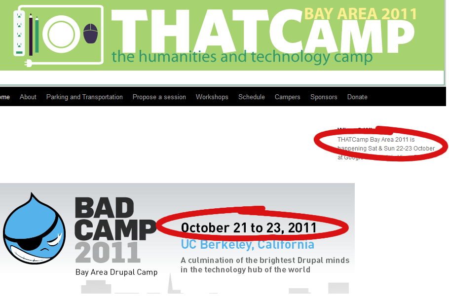

I just noticed a rather disturbing similarity in the marketing material for two upcoming “camps” directed at open-source types who might be involved in technology in the academy.

Originally published at Digital Humanities Specialist. This edition preserves the original text and historical context.
I just noticed a rather disturbing similarity in the marketing material for two upcoming “camps” directed at open-source types who might be involved in technology in the academy.
